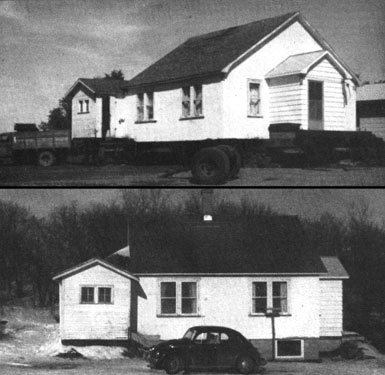

Our North Dakota homestead is just ten miles from the Canadian line and, when we moved "in", there was no house on the small farm. We needed a residence that would withstand those long, severe winters when temperatures of 40 below are not uncommon. We also wanted electricity and indoor plumbing. You can call us chicken for that last requirement ... but have you ever used an outhouse when you had to look up to see zero on the thermometer?
Anyway, there we were trying to stretch some sort of home out of a severely limited budget. The situation appeared impossible. Then, just when we were about to give up trying, a friend suggested we buy a nearby house that was for sale and move it to our property.
As crazy as the idea seemed, it worked. The five-room, wood frame, insulated building-complete with storm windows, screens, cupboards, carpeting in two rooms and linoleum in the other three, modern wiring, two porches, curtains and a kitchen sink-cost us only $900. The moving charges came to $375. Since the house needed no repair and was complete and ready to live in, we had few of the expenses associated with building. The ole budget not only covered the purchase price and transportation charges ... but the construction of a basement for our "new" home too!
I'm not saying that ours is the only or always the most economical way to solve a shelter problem ... but it certainly worked for us. Even now, I have difficulty believing we obtained such a fine building for so small an investment. Of perhaps even more interest (from your point of view) is the fact that our bargain housing was definitely no "iffy", one-of-a-kind fluke. Solid, older, movable homes are available at extremely reasonable cost all over this continent. Many are priced much lower than the small amount we paid for ours.
Some may even be had for the asking ... or, should I say, "the moving".
Once you've had your eyes opened to the possibilities, you'll probably be as surprised as we were at the number of abandoned homes in the United States and Canada (especially in rural areas). Look for the older small farms that have been consolidated into a single "agribiz" giant ... thereby making one or more whole sets of houses, barns and outbuildings superfluous. There are often good buys in villages ... especially the backwater, sleepy, dying kind. And don't forget that people often build a new house merely to have more or less living space, not because the old one is worn out: when you spot replacement construction, ask the budder what he intends to do with the older home.
A small, one-story house is the easiest and least expensive to move. Don't be afraid to look at larger homes, however, if you desire more room. It's possible to transport just about any size building from one location to another ... I've even seen grain elevators going down the road. Just remember that the larger a structure is, the stronger its frame and floor joists must be for the building to be moved safely.
I would avoid any house which is not sitting on a good foundation and I wouldn't even consider a building that appears to be leaning. If you start with a structure that's solid and straight, you'll have a lot more dollars left in your pocket at the end of the move.
And don't forget the route over which you intend to transport your "new" house. That can have a widely varying impact on your wallet too. The shorter the distance from the build
ing's present site to where you want it, the better. Are the roads between the two locations adequately wide and free of overpasses? If not, do you have good alternate routing in mind?
What about low electric and telephone wires (more of a problem in town than in the country)? Raising a few lines is an acceptable expense, but hoisting too many will knock a hole in your budget. Get firm quotations from the proper utility before you start trucking down the road.
I've seen buildings transported by amateurs with only the most basic equipment. Once you've found a nice house, however, and know that you really want to see it arrive on your homestead intact, I'd recommend the services of a professional moving crew. These men often travel great distances (and frequently work their way completely around a state), so don't be alarmed if-at first-you have difficulty finding such specialists. The chief of a transfer crew-of course-will have to inspect the structure you want moved, the route over which it will be carried and your home's new location before he can give you an accurate estimate on the cost of the job. You-of course-will want to get that estimate in writing.
A professional crew comes complete with large jacks, heavy timbers, planking, blocking, blocks and tackles, trucks and experience ... equipment and skill-in other words-that the amateur can seldom muster for a one-shot deal.
A veteran team of movers can make the transporting of a building look much simpler than it really is. First they lift the house off its foundation with heavy jacks ... very, very carefully and all at once to keep the structure from being twisted out of shape. Giant timbers are then slid under the building and the jacks are removed.
As soon as suitable blocking and planks can be arranged, the house is rolled off its old foundation (with small steel rollers) and onto a truck. Actually, in most cases, only part of the structure rests on the truck and the overhanging portions ride on dolly wheels. Occasionally, a very large building is even cut into two or more pieces and carried to another location in sections. The raising and rolling process is then reversed to lower the home onto its new foundation.
This all requires considerable skill and hard work ... and it took a crew of six two days to move our modest-sized house a relatively short distance.
Of course, if the building you're trying to transport is small enough, you may be able to improvise and do the job yourself. I've seen little structures taken from one site to another with a "drag". The buildings were jacked up, let down on long runners or poles (the drag) and then slowly pulled to the desired spots. It's a great, low-cost way to move a good-sized chunk of anything over sod, dirt or gravel ... but won't work at all on hard-surfaced roads.
Speaking of improvisation, I have a friend who once carried a three-room cottage to a new location on a haystack mover. He was pretty clever ... but not nearly as enterprising as another acquaintance. This second fellow found himself a two-story house that was a real-I mean real -bargain ... except for the fact that the route along which he proposed to move the structure was absolutely loaded with overhead wires. My friend finally tore off the building's top story, moved the bottom half and then rebuilt the second floor. He was able to reuse almost all the original lumber, so his idea worked out quite well.
Buying or accepting the donation of an existing budding and then taking the structure to where you want it offers all kinds of low-cost housing possibilities. I hope you'll give this approach to recycling some thought. Good hunting and good moving!
|
 |
|
|